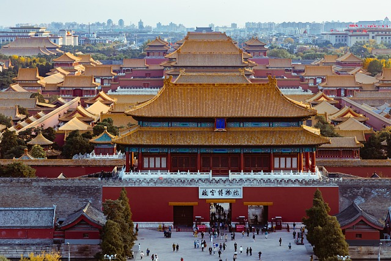

La Cité Interdite
Localisation :
Pékin
Visiteurs annuels :
14600000 visiteurs
Superficie :
72 hectares
Pékin
14600000 visiteurs
72 hectares
La cité interdite est l'un des plus importants lieux touristiques de
Chine(environ 40.000 visiteurs par jour) et abrite le plus grand musée du
pays(Le musée national du Vieux Palais) possédant plus d'un million
d'oeuvres. Sa superficie est
de 72 hectares dont 50 de jardins et elle est entourée d'une muraille de 10 m de haut sur 6 m de large, elle même
entourée d'une impressionante douve de 52 mètres de large. La Cité
Interdite n'a été ouverte au public qu'à partir de 1924 car avant cela seul
l'Empereur de Chine et sa cour avaient le droit de s'en approcher. En
outre la Cité Interdite a été inscrite en 1987 au patrimoine mondial de
l'humanité par l'UNESCO.
La cité interdite est un lieu très important de l'histoire de chine, en effet, en son temps
(dynasties Ming et Qing), cet immense palais de 72 hectares a servi de demeure à pas moins
de 24 empereurs. Une légende raconte que cet imposant édifice compte un total de 9999
pièces car seuls les dieux ont le droit de posséder des palais de 10 000 pièces (l’objectif étant
donc que l’Empereur se rapproche le plus possible des dieux) cependant une étude a
démontrée qu’il n’en contient en réalité que 8704.